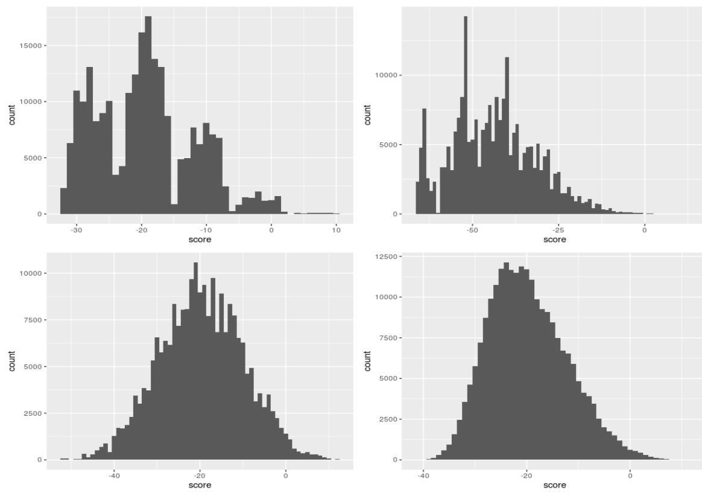
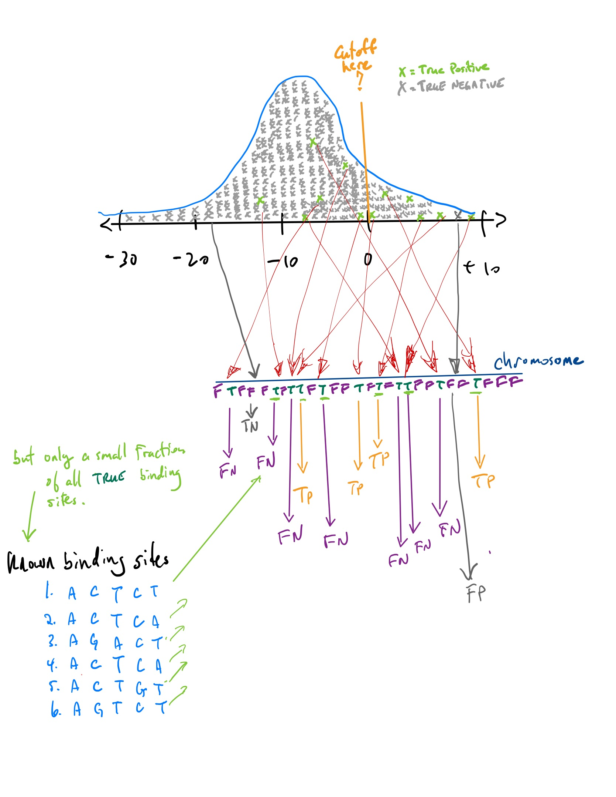

Gene finding with Hidden Markov Models
M Hallett
21/07/2020
Goals for today
Object oriented programming in R: S4 objects (short note)
Then back to computational biology …
Measures of performance
Markov models
Hidden Markov Models
A simple model for gene finding
Object Oriented programming
A complete exposition on object orient (OO) programming would take a complete course
Our goal here is just to introduce you to this important concept
OO is a very powerful paradigm that really helps to organize code.
In R, there are three different types of OO programming, ordered by “strictness” (from informal to formal):
\[ S3 < S4 < RS = R5 < R6 \]
- Let’s not worry about why there are so many flavours of OO programming, but just focus on \(S4\) as a compromise.
The basic concepts of OO programming
OO programming begins with the concept of a \({\tt class}\). Here we can make new classes on demand.
For example, we can think of genomes as a class. Individual objects of this class correspond to a single genome. So there would be an object \({\tt Scerevisiae}\) for the genome of yeast and an object \({\tt Hsapiens}\) for human etc.
To create a \({\tt Genome}\) class in R, we can use the \({\tt setClass}\) function from the R base language.
The \({\tt setClass}\) function has several required arguments, and many optional arguments that more advanced practioners would use to ensure good programming style.
Now each \({\tt Genome}\) object can have several attributes or properties. These are stored in \({\tt slots}\) of the object. For example each genome object would have a name (of the organism), and perhaps a \({\tt DNAStringSet}\) to contain the chromsomes, plus many more attributes for annotations.
A genome class
Genome <- setClass (
"Genome", # Set the name of the class. Often people start with uppercase
slots = c(
organism_name = "character",
chromosomes = "DNAStringSet",
annotations = "data.frame",
chromosome_names = "data.frame",
GO = "data.frame"
), # end of slots
prototype = list( # set the default values for each slot (optional)
organism_name = "", chromosomes = DNAStringSet(),
annotations = data.frame(), chromosome_names = data.frame(),
GO = data.frame()
), # end of prototype
# This fucntion can check that the data in your object is consistent;
validity = function(object) {} # it doesn't do anything.
) # end of genome classInstantiating objects of class GENOME
- Now we can create objects of class \({\tt Genome}\) passing different arguments to fill the slots.
bland <- Genome()
(bland) # the slots have default settings
## An object of class "Genome"
## Slot "organism_name":
## [1] ""
##
## Slot "chromosomes":
## DNAStringSet object of length 0
##
## Slot "annotations":
## data frame with 0 columns and 0 rows
##
## Slot "chromosome_names":
## data frame with 0 columns and 0 rows
##
## Slot "GO":
## data frame with 0 columns and 0 rows
bland@organism_name # note the use of the @ operator to access slots
## [1] ""
bland@chromosomes
## DNAStringSet object of length 0Instantiating objects of class GENOME
# data_path <- "/cloud/project/data" # for RStudio Cloud
anno <- read_rds( file.path( data_path, "annotations_1.0.rds" ))
sc <- read_rds( file.path( data_path, "sc_1.0.rds" ))
sc_meta <- read_rds( file.path( data_path, "sc_meta_1.0.rds" ))
go <- read_rds( file.path( data_path, "GO.rds" ))
Scerevisiae <- Genome(organism_name = "Saccharomyces cerevisiae",
chromosomes = sc,
chromosome_names = sc_meta,
annotations = anno,
GO = go)
Scerevisiae@organism_name
## [1] "Saccharomyces cerevisiae"
Scerevisiae@annotations
## # A tibble: 23,058 x 9
## seqid source type start end score strand phase attributes
## <fct> <fct> <fct> <int> <int> <dbl> <fct> <fct> <chr>
## 1 chrI SGD chromosome 1 230218 NA <NA> <NA> ID=chrI;dbxref=NCBI:…
## 2 chrI SGD telomere 1 801 NA - <NA> ID=TEL01L;Name=TEL01…
## 3 chrI SGD X_element 337 801 NA - <NA> ID=TEL01L_X_element;…
## 4 chrI SGD X_element… 63 336 NA - <NA> ID=TEL01L_X_element_…
## 5 chrI SGD telomeric… 1 62 NA - <NA> ID=TEL01L_telomeric_…
## 6 chrI SGD gene 335 649 NA + <NA> ID=YAL069W;Name=YAL0…
## 7 chrI SGD CDS 335 649 NA + 0 Parent=YAL069W_mRNA;…
## 8 chrI SGD mRNA 335 649 NA + <NA> ID=YAL069W_mRNA;Name…
## 9 chrI SGD gene 538 792 NA + <NA> ID=YAL068W-A;Name=YA…
## 10 chrI SGD CDS 538 792 NA + 0 Parent=YAL068W-A_mRN…
## # … with 23,048 more rows
length(Scerevisiae@chromosomes[[3]])
## [1] 316620
write_rds( Scerevisiae, file.path( data_path, "Scerevisiae_vers_1.0.rds" ))Methods associated wtih classes
Sometimes we want to have specific methods (functions) that operate on our objects.
Recall the \({\tt my\_scan}\) function from last class that takes a binding site and searchers for it in the target sequence.
We won’t explore this functionality here.
Now back to computational biology
What is a model?
Why are they important?
How do we build a model?
How do we parameterize or train a model?
How do we evaluate its performance?
How do we validate a model?
TF binding sites revisited
- We left off last class with this figure describing the distribution of log-odds ratio of 4 TFs across chromosome 3 of yeast.

- The question is where to set the point along the \(x\)-axis to call scores to the right as putative TF bindings sites and scores to the left as random hits.
Classifiers
If you set a point along the \(x\)-axis, any point to the right corresponds to a score from a position somewhere in the chromosome. This position in the chromosome would be classified as a positive hit, an actual binding site for the TF.
Any point to the left corresponds to a score from a position somewhere in the chromosome that is not strong enough to be classified as binding site. It is classified as a negative. hit.
The reality, which you do not know but which you are trying to “learn”, is that each position along the chromosome is either true binding site or false binding site.
If we predict a position in the chromosome to be a binding site, and it truly is, we call it a True Positive (TP).
If we predict it not to be a binding site and it really is not a binding site, we call it a True Negative (TN).
If we predict a position in the chromosome to be a binding site, and it is not, we call it a False Positive (FP).
If we predict a position in the chromosome not to be a binding site, and it truly is, we call it a False Negative (FN).
TP, FP, TN, FN

Measures of performance
\[ Sensitvity = \frac{\#TP}{\#TP+\#FN} \]
\[ Specificity = \frac{\#TN}{\#TN + \#FP} \]
\[ Accuracy = \frac{\#TP + \#TN}{\#TP + \#FP + \#TN + \#FN} \]
(Many other related notions, some of which we will explore later.)
But TP, FP, TN, and FN are difficult to know for the TF binding site problem. Which are the most problematic?
Training and testing
Another issue in the approach above is that the motifs that were used to train our model (the position weight matrix) were used in the evaluation of its performance.
The required reading starts to touch on this issue and we will explore it more today.
Briefly here, whatever data you use to train your model should be kept completely separate than the data used to validate your model.
One simple approach in this direction would be to train the model using only half of the binding sites (eg 3 of 6) and use the other half to compute TP, FP, TN, FN. Why is this not quite correct either?
Goals for today
Object oriented programming in R: S4 objects (short note)
Then back to computational biology …
Measures of performance
Markov models
Hidden Markov Models
A simple model for gene finding
(We switch now to some hand written notes.)
Points of reflection
What are some of the differences between predicting genes in eukaryotic versus prokaryotic genomes?
Besides nucleotide frequency, what other genomic properties could be used to predict the location of genes?
What are the advantages of object oriented programming?
BIOL 480
© M Hallett, 2020 Concordia University